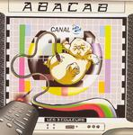

Home Artist links

Abacab - Les 3 Couleurs
| Artist: | Abacab |
| Title: | Les 3 Couleurs |
| Label: | self produced BCB01/1 |
| Length(s): | 23 minutes |
| Year(s) of release: | 2004 |
| Month of review: | [03/2005] |
Line up
Thomas Boulant - vocals, guitar
Arnaud Catouillard - guitar, vocals
Yohan Lampis - drums, percussion, harmony vocals
Alexy Wilmot - bass, harmony vocals
Guillaume Wilmot - keyboards, vocals
Cédric Kuznicki - sound effects and noises
Tracks
| 1) | Métrocité (concept) | 0.17
|
| 2) | Ne Me Dérangez Pas! | 3.54
|
| 3) | Zapping Infos (concept) | 0.28
|
| 4) | Les 3 Couleurs | 8.11
|
| 5) | La Source | 10.41
|
Summary
Although their name refers to Genesis in a period of which most proggers
are preferably not reminded too often, it still remains to be seen what
the style of the band actually turns out to be.
The music
After a short intro we move into rather hectic territories. Hasty, urgent
vocals in French, spooky keyboards and jumpy rhythm and solo guitar.
Ne Me Dérangez Pas! is a song full of variation with some all out
keyboard solo, which can be hard on the ears, but fit the music quite well.
Dramatic gestures, as most will expect from a French prog band, and overall
a rather flashy production and plenty of enthusiasm. Quite impressive.
After another short interlude, Zapping Infos (concept), we come to the
title track. There is nice tension to this track, which has recitative
vocals and interjections on rhythm guitar. Again, there is a spooky feel
to some of the parts, and variation reigns: jumpy acoustic passages,
rather angular playing and singing. If I have to categorize them, I would
put them somewhere in between Nemo (the French influence and the progmetal
feel) and Galahad. Melodically I rate this song a bit lower than the 'first'
one. But the highly energetic push is still there.
La Source is the final and longest track on this mini album. It combines
fast runs percussively punctuating on piano with speedy guitar solo's.
Conclusion
There is no song here of the quality of the song Abacab by Genesis. Is that
a shame? No, in fact there is no reason to link Abacab up with Genesis at all.
The music lies somewhere between Nemo and Galahad, combines abundantly and
energetic progmetal outings with the typical French dramatic feel and quite
a bit of tension. The music can be quite hectic, but they do take
rest now and then. The result is a very competent sounding mini album, which
could do with a few more melodies to nest in one's head, but for a debut
this is quite impressive and I for one am looking forward to the follow-up.
A suivre... as the band itself says.
© Jurriaan Hage